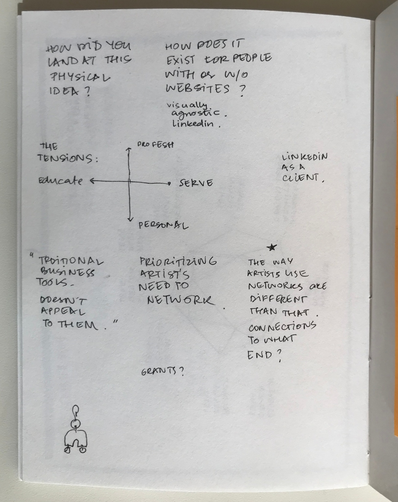
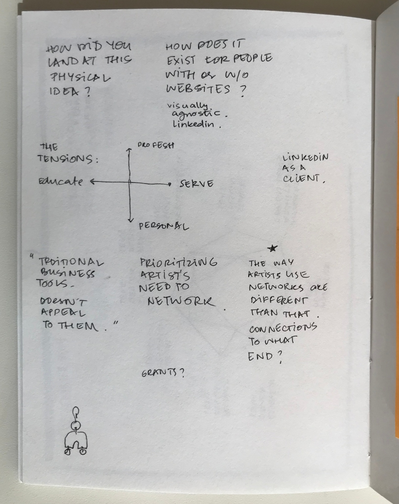
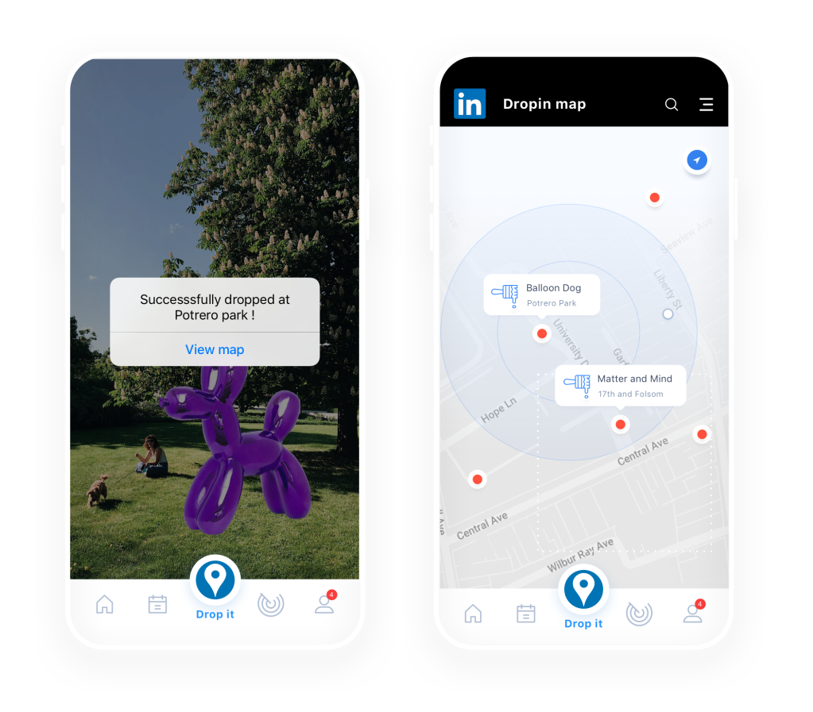
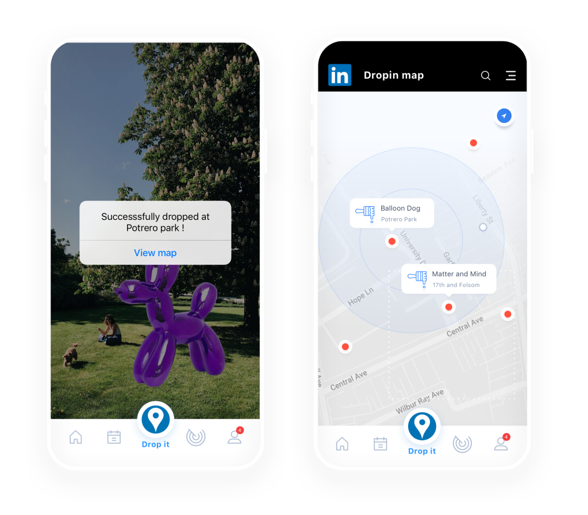

It all began with a research class prompt — In the context of the Future of Work, which sector or demographic group are you most interested to understand better? Based on our responses, we formed groups — aligned in our love for the arts, but disparate in our skillsets — Larika, Maxime and I worked together for the next 8 weeks on the subject of what the future holds for professional artists and how, in turn, creativity influences the workplace.
We wanted to learn about the ways in which artists adapt to emerging technology and how social platforms influence a creative person’s work and discoverability.
Role: Research, Visual Design, Prototyping, Presentation
Team: Larika Mallier, Maxime Stinett
Duration: 8 weeks
Advisor: Minnie Bredouw & Dana Ragouzeos

We set guidelines as a team, scripting a discussion guide for our in depth interviews, and tabulating our timelines. We interviewed an assorted selection of artist with a keen ear for their hopes and fears with respect to the future of work–personal and universal–while taking detailed notes. As the more visually trained eye of the team, I took on the role of monitoring all the graphical aspects of our presentation and prototype.
We conducted six in depth interviews, and a few surveys. Among the many things we learnt, we found it interesting that while artists often prefer to create independently, their work relies heavily on the inspiration and promotional opportunities afforded by a strong community. Artists appear to recognize the opportunities that social media affords, but would rather spend time working on their craft than in building an online presence.
We also studied the existing networks that were being leveraged– physical and digital, and organizations whose grants and residencies helped artists get their work off the ground. As students at an art college, we took to the hallways to gather some generative thoughts on our assumptions, using surveys.


Before converging our thoughts and discoveries, we decided to visit the MoMA for some analogous inspiration. We were looking for cues of interactive storytelling which could be employed in the development of our ideas. The influence showed up in one of the ideas that we didn’t ultimately pursue.
The assignment afforded us an opportunity to reframe our opportunity statement through the lens of a specific brand, and while questioning which brand would be best suited for a challenge like this one, we tried to learn about what differentiates the way artists use their networks.
These factors limit their reach to a wider audience, and consequently, intersectional opportunities for work.
 

This is where Linkedin emerged as a brand with potential.

Conversely, what we heard from our participants was that:
“LinkedIn makes me feel gross.” – Matt, comic artist and educator
“It just feels inauthentic.”
– Emily, bassist
Connecting virtually feels less authentic than meeting in person, because there is often more context in a physical environment.
How might help artists build networks wherein they feel a sense of belonging?
As the Largest professional networking platform in the world, LinkedIn offers access to a diverse professional community. We saw an opportunity in this.
With this new reframe, we began to sketch wireframes for a version of an artist’s LinkedIn profile that not only substituted as a snapshot of their work, but also brought forth the team you worked with, the place you produced that work at, and the tools they used.
This was a key design decision which represented the patterns of need that emerged from our research.


We visualized the artist’s network radially, and map proximity, along with other relevant variables and behave as a matching algorithm. This way creators can finding people who are either meet your needs, or whose needs can be met by you, depending on the filters of their choosing.


We then conducted a co-design session to review our ideas and revised some aspects of our concept based on the feedback and discussions.


We divided the co-design session broadly into four parts.
We began by gathering a sense of everyone’s hopes and fears with respect to the Future of Work. We moved onto the subject of networking and showcasing by conducting a hands-on exercise with a 2X2 grid framework, inviting you to place different platforms within the spectrum. The discussions around this particular exercise grew generative, and has informed much of our final outcome. We then sketched storyboards of how networking works right now, vs what it could potentially be. The co-design session concluded with an opportunity statement that perfectly rephrased our initial findings and research:
Through the co-design session, we uncovered various other expectations that people in the creative field have. There was some affinity towards showcasing one’s work as a potential to professional leads, and thus we began to reshape our idea into the tangible story of Drop In.
One of the ideas that emerged from our brainstorming, was an augmented reality-esque interaction which allowed a creator to set the context in which their work lived, as opposed to the nondescript backdrop of a traditional ‘gallery’ or ‘gig’ event space.
We called it ‘Drop In’, and created a few story boards around this. A mobile application that allows you to virtually upload your piece of art, in a media format of your choice, at any public locations. In a similar way, it enables you to discover local artists using augmented reality, an experience not very different from fetching Pokémon on Pokémon Go.

We stitched together the reach of LinkedIn with the function of DropIn. A networking tool for artists to showcase, network and discover other artist.
We created a quick and funny video to showcase the product’s core flows– the experience of uploading a piece of media, as well as stumbling upon artwork created by someone in your network.
The core user workflows

 


I enjoyed the vigor of extracting insights out of a world of information. The greatest learning for me, personally, was around how to strategically involve key stakeholders in the process, to inspire an outcome that works.
If I were to go back to this project and fix something, I’d push us to spend a little more time and energy in the synthesizing phase of our research. There was a vastness to our challenge statement that didn’t help our outcomes.
I would love to be able to take the product out to the world and get some more feedback while also figuring out technicalities around intellectual property rights, data security and spam prevention.